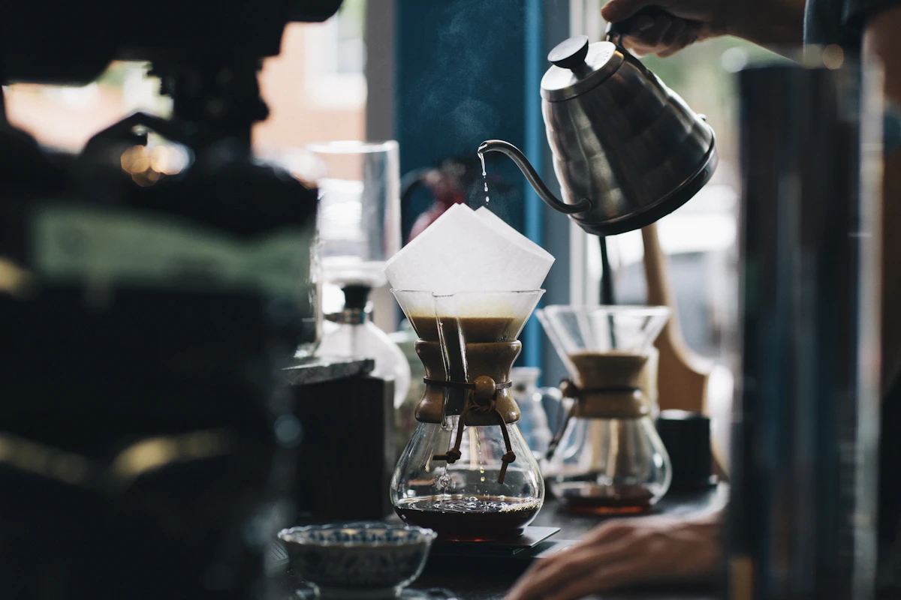

Спешелти-кофе · Без спешки
Кофе как
ритуал
Бережно заваренный кофе, тёплые разговоры и немного времени для себя
Посмотреть меню
О нас
Хороший кофе.
Время без спешки
«Noma» начинается с простых вещей: любимого места у окна, аромата свежемолотого зерна и чашки, приготовленной с заботой.
Мы задумали небольшую городскую кофейню, куда легко зайти по пути и приятно вернуться. За утренним эспрессо, разговором с бариста или тихой паузой посреди дня.
В гости
Загляните
на чашку
Оставьте городскую суету за дверью. Здесь найдётся время для тёплой чашки и спокойного разговора.
Наш уголок города
Екатеринбург
ул. Тихого утра, 12
Ждём вас
Пн–Пт · 08:00–20:00
Сб–Вс · 09:00–20:00
«NOMA» - вымышленная кофейня. Адрес и часы работы приведены для демонстрации.